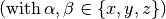
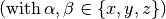
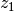
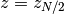
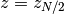

Lateral pressure profile¶
Evaluation of the equilibrium properties of the lateral pressure profile across a planar bilayer. These include the average profile and its standard deviation over a set of instantaneous realizations, as well as its integral momenta.
- class py3_lat_press_prof.LatPressProf(tens_file)¶
Lateral pressure profile,
 , across a planar bilayer.
, across a planar bilayer.It is assumed that the bilayer normal lies along the
 -axis, so that the
definition of reduces to:
-axis, so that the
definition of reduces to:![\Gamma(z) = P_{zz}(z) - \left[P_{xx}(z) + P_{yy}(z)\right] / 2](_images/math/541f42582b967f17eccd0d4cc0c48a7d64a90bfd.png) ,
,where
 are the diagonal components of the pressure tensor,
are the diagonal components of the pressure tensor,  ,
across the bilayer
.
,
across the bilayer
.The equilibrium properties of
are evaluated from its ensemble
average, over a set of realizations (samples), at different time steps.
These realizations should be provided as an input data file, tens_file,
with the following format:height 


# Commented or labeled lines must start with `#` 
%f %f %f %f %f %f  %f %f %f %f %f %f . . . . . . . . . . . . . . . . . . . . . 
%f %f %f %f %f %f # Every sample terminates with two blank lines \n \n where the first column stores the homogeneous, spatial discretization of the simulation box along the bilayer normal, i.e., it consist of an array of
 slabs of width
slabs of width  . Furthermore, it is assumed
that, for each realization, the bilayer’s midplane lies exactly at the
middle of the simulation box, .
. Furthermore, it is assumed
that, for each realization, the bilayer’s midplane lies exactly at the
middle of the simulation box, .The creation of PressProf objects requires passing tens_file as a unique argument:
press_prof_object = PressProf('pressure_tensor_file.ext')
This returns an object containing the average pressure profile and its local standard deviations,
 , stored in prof and prof_err,
respectively.
, stored in prof and prof_err,
respectively.The integral momenta of
are evaluated upon request, by calling the
method get_momentum(int(n)). This returns an array of length
slabs, whose i-th entry is the integral momentum of degree n,
centered at and evaluated over the entire
simulation box.Parameters: - height ([float]) – Discretization of the simulation box along the bilayer normal.
- prof ([float]) – Lateral pressure profile across the bilayer: .
- prof_err ([float]) – Standard deviation of of the lateral pressure profile:
.
- samples (int) – Number of instantaneous realization of the pressure-tensor in the input file.
- slabs (int) – Number of slabs across the bilayer normal: .
- slab_width (float) – Width of the discretization slabs: .
- __init__(tens_file)¶
Initialization is only possible for a properly formated input file.
Parameters: - _momenta ([[float]]) – Accumulator of integral momenta arrays: the 1st call to get_momentum() with the integer argument n will be appended to the i-th entry of this accumulator. Subsequent calls to get_momentum() with the same argument, n, won’t re-evaluate the integral momentum again, but will refer to the i-th entry of this accumulator.
- _momenta_index ({int: int}) – Link to the array of integral momenta of degree n in the _momenta accumulator.
- _check_tens_file(tens_file)¶
Verifies the existence and proper format of the input file.
Returns the validated name of the input file in case it exist and has the expected format. On the contrary, the program is terminated with an error message.
Parameters: tens_file (string) – Input file with the instantaneous realizations of the pressure tensor. Returns: tens_file Return type: string
- _evaluate_momentum(grade)¶
Evaluates the integral momentum of degree grade.
The i-th entry of the auxiliary array, momenta, stores the integral momenta of degree grade, centered at and evaluated over the entire simulation box. When all the centered momenta have been computed, they are appended to the instance accumulator _momenta and the corresponding tuple is updated to _momenta_index.
Parameters: - grade (int) – Grade of the requested integral momentum.
- momenta ([float]) – Array storing the integral momenta of degree grade, centered at .
- _get_1st_sample(tens_stream)¶
Get the 1st instantaneous realization of the pressure profile.
Sets the number of slabs in the pressure profile and the discretization along the bilayer normal (slab_width). Also provides a 1st approximation of the local mean, which allows the evaluation of local variances in a single file-read, without round-off errors due to the floating-point arithmetic of large numbers. The local sum of linear and squared deviations from the approximated mean are also initialized.
Finally, the input stream to the input data file is re-winded before termination.
Parameters: - tens_stream (text_stream) – Stream to the input data file.
- mean ([float]) – Guess of the local mean values.
- sum_lin ([float]) – Zeroed sum of linear deviations from the guessed mean.
- sum_sqr ([float]) – Zeroed sum of squared deviations from the guessed mean.
- blanks (int) – Consecutive blank lines in the input stream. Two blanks separate individual profile realizations.
Returns: mean, sum_lin, sum_sqr
Return type: [float], [float], [float]
- _get_momenta_index(grade)¶
Index of the integral momenta of degree grade in _momenta.
If grade is found in _momenta_index, then the corresponding index and a ‘True’ Flag are returned. Otherwise index=-1 and Flag=’False’.
Parameters: - grade (int) – Grade of the requested integral momentum.
- index (int) – Index of the requested integral momentum in the _momenta array.
- FLAG (boolean) – Flag indicating if the requested momentum was found.
Returns: index, FLAG
Return type: int, boolean
- _get_profile()¶
Evaluates the lateral density profile and its statistical error.
Having the sum of linear and square lateral pressure profiles (sum_lin and sum_sqr, respectively) as well an estimation of its local mean values (mean), the average density profile (prof) and its unbiased standard deviation (prof_err) are computed.
Parameters: - mean ([float]) – Guess of the local pressure profile mean.
- sum_lin ([float]) – Sum of linear deviations from the guessed mean.
- sum_sqr ([float]) – Sum of squared deviations from the guessed mean.
- _get_samples()¶
Read instantaneous realizations of the pressure profile from input file.
Set the number of samples to be analyzed. Also sets the local sums linear and squared deviations from a tentative mean (obtained from the 1st profile sample), which are needed for the evaluation of the local averages and standard deviations.
Parameters: - mean ([float]) – Guess of the local mean values.
- sum_lin ([float]) – Sum of linear deviations from the guessed mean.
- sum_sqr ([float]) – Sum of squared deviations from the guessed mean.
- tens_stream (text_stream) – Stream to the input data file.
- blanks (int) – Consecutive blank lines in the input stream. Two blanks separate individual profile realizations.
- slab (int) – Location index across the bilayer discretization.
Returns: mean, sum_lin, sum_sqr
Return type: [float], [float], [float]
- get_momentum(grade)¶
Retrieves the requested integral momenta from _momenta.
If the integral momenta of degree grade have not been computed, i.e., grade is not indexed in _momenta_index, _index=-1 and _Flag=False, then the requested momenta are computed and appended to the momenta accumulator, _momenta.
Parameters: - grade – Grade of the requested integral momenta.
- _index (int) – Link to the array of integral momenta of degree grade in the _momenta accumulator.
- _FLAG (boolean) – Boolean flag indicating if the requested integral momentum as to be computed.
Returns: Integral momenta of degree grade from the _momenta.
Return type: [float]